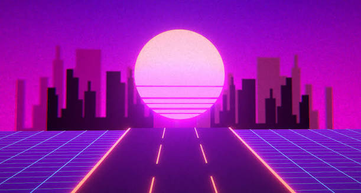
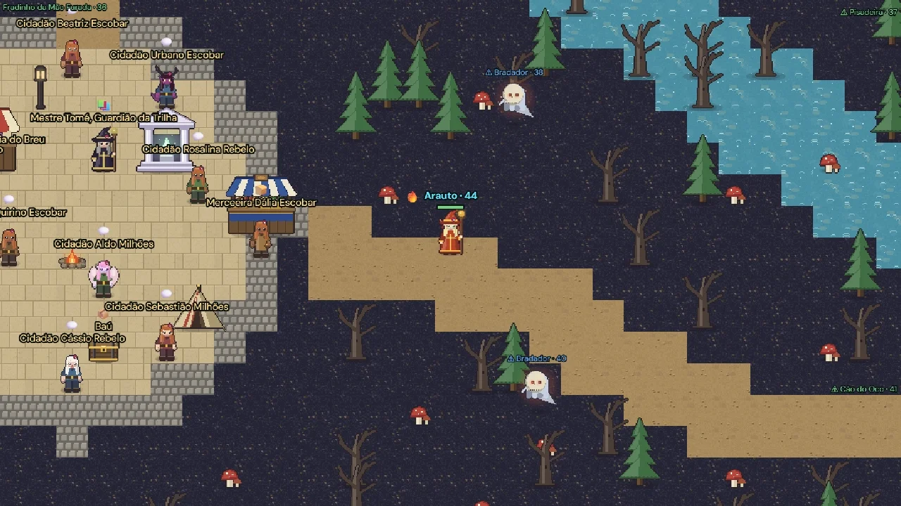
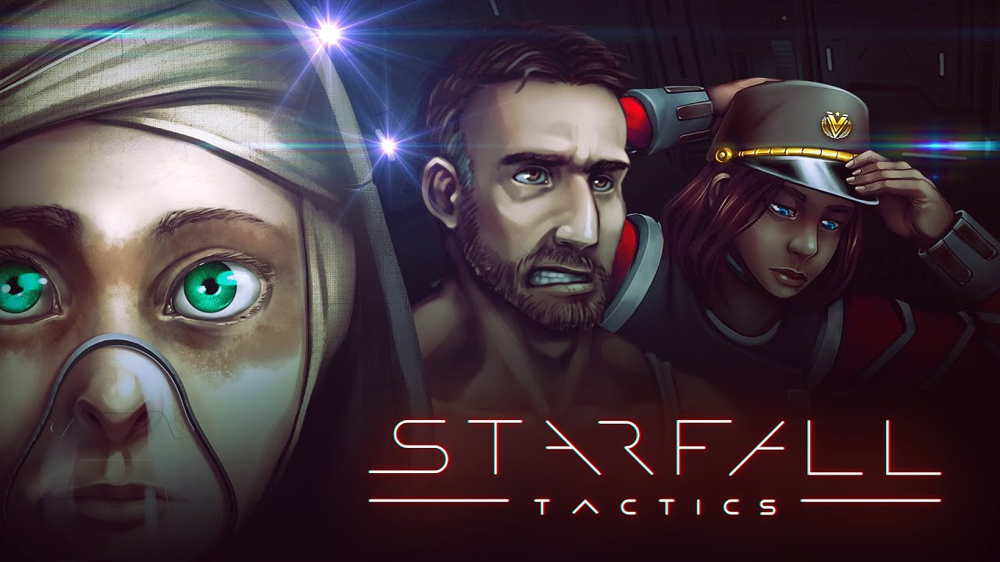
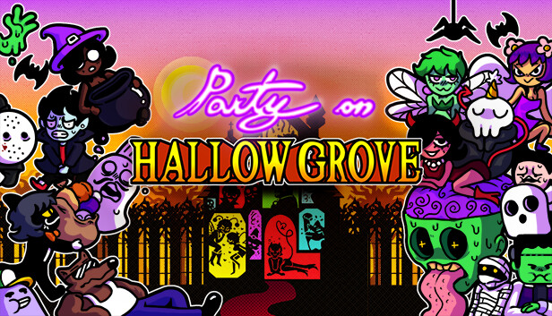

Neon Drift: Overclock

Data: 04/12/2026 | Plataformas: PC, PS5 e Xbox Series | Gênero: Corrida
Jogo de corrida numa cidade cheia de luz neon, com muito drift e turbo. Vai ter modo online com até 12 jogadores.
Um blog sobre games feito por quem ama jogar
Esses são os jogos que eu estou esperando sair. As datas podem mudar, então fica de olho! (Os jogos dessa página são inventados para o trabalho.)

Data: 04/12/2026 | Plataformas: PC, PS5 e Xbox Series | Gênero: Corrida
Jogo de corrida numa cidade cheia de luz neon, com muito drift e turbo. Vai ter modo online com até 12 jogadores.

Data: 19/02/2027 | Plataformas: PC e PS5 | Gênero: RPG de ação
RPG de mundo aberto inspirado no folclore brasileiro. As escolhas que você faz mudam o que acontece com as vilas do jogo.

Data: 12/03/2027 | Plataformas: PC e Switch 2 | Gênero: Estratégia
Estratégia por turnos no espaço. Você controla um esquadrão e, se um personagem morrer, ele não volta mais.

Data: 2027 (sem dia certo) | Plataformas: PC, Xbox Series e Switch 2 | Gênero: Sobrevivência
Jogo de sobrevivência mais tranquilo, sem combate. Você constrói uma casa numa floresta mágica e cuida de criaturas.
| Jogo | Data | Plataformas | Gênero |
|---|---|---|---|
| Neon Drift: Overclock | 04/12/2026 | PC, PS5, Xbox | Corrida |
| Ecos de Aldora | 19/02/2027 | PC, PS5 | RPG |
| Starfall Tactics | 12/03/2027 | PC, Switch 2 | Estratégia |
| Hollowgrove | 2027 | PC, Xbox, Switch 2 | Sobrevivência |